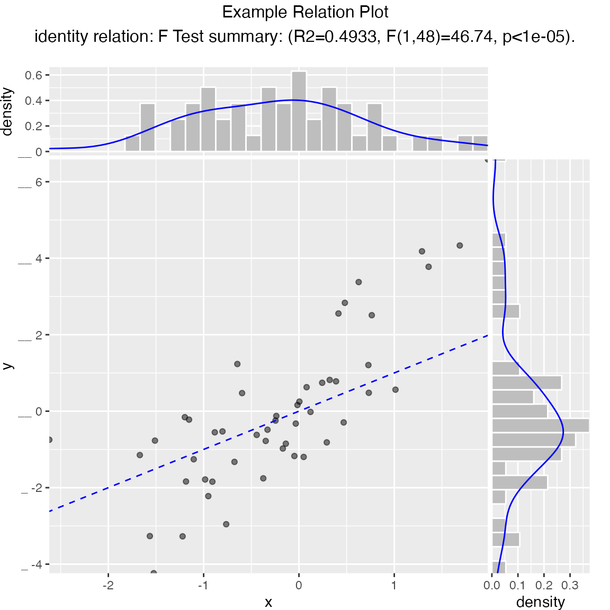
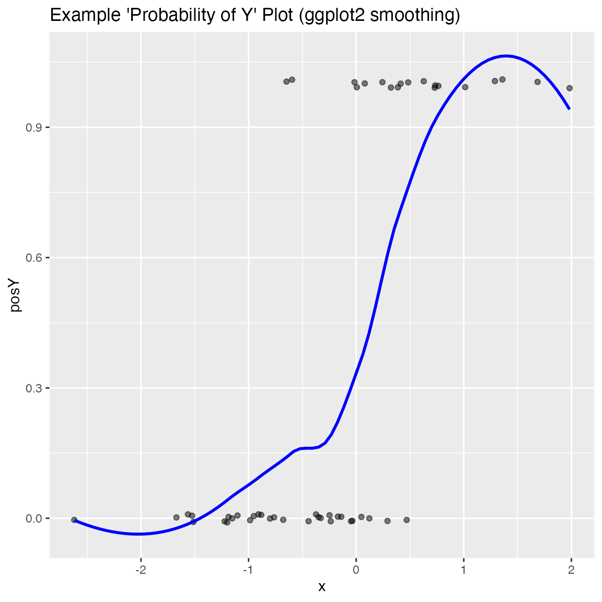
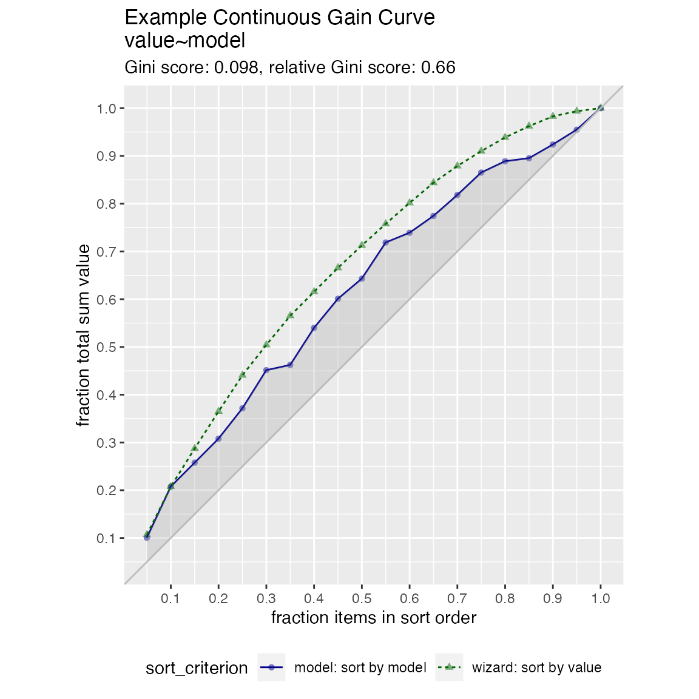
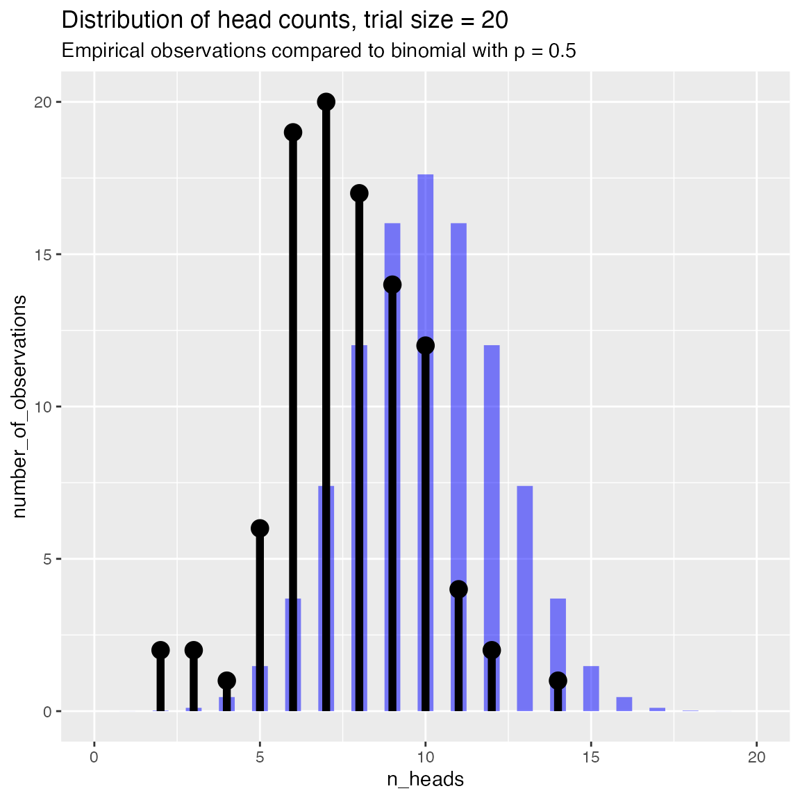

Example WVPlots
Win-Vector LLC
2020-02-02
Source:vignettes/WVPlots_examples.Rmd
WVPlots_examples.RmdSome example data science plots in R using ggplot2. See https://github.com/WinVector/WVPlots for code/details.
set.seed(34903490)
x = rnorm(50)
y = 0.5*x^2 + 2*x + rnorm(length(x))
frm = data.frame(x=x,y=y,yC=y>=as.numeric(quantile(y,probs=0.8)))
frm$absY <- abs(frm$y)
frm$posY = frm$y > 0Scatterplots
Scatterplot with smoothing line through points.

Scatterplot with best linear fit through points. Also report the R-squared and significance of the linear fit.
WVPlots::ScatterHist(frm, "x", "y", smoothmethod="lm",
title="Example Linear Fit", estimate_sig = TRUE)
Scatterplot compared to the line x = y. Also report the coefficient of determination between x and y (where y is “true outcome” and x is “predicted outcome”).
WVPlots::ScatterHist(frm, "x", "y", smoothmethod="identity",
title="Example Relation Plot", estimate_sig = TRUE)
Scatterplot of (x, y) color-coded by category/group, with marginal distributions of x and y conditioned on group.
set.seed(34903490)
fmScatterHistC = data.frame(x=rnorm(50),y=rnorm(50))
fmScatterHistC$cat <- fmScatterHistC$x+fmScatterHistC$y>0
WVPlots::ScatterHistC(fmScatterHistC, "x", "y", "cat", title="Example Conditional Distribution")Scatterplot of (x, y) color-coded by discretized z. The continuous variable z is binned into three groups, and then plotted as by ScatterHistC
set.seed(34903490)
frmScatterHistN = data.frame(x=rnorm(50),y=rnorm(50))
frmScatterHistN$z <- frmScatterHistN$x+frmScatterHistN$y
WVPlots::ScatterHistN(frmScatterHistN, "x", "y", "z", title="Example Joint Distribution")
Plot the relationship y as a function of x with a smoothing curve that estimates \(E[y | x]\). If y is a 0/1 variable as below (binary classification, where 1 is the target class), then the smoothing curve estimates \(P(y | x)\). Since \(y \in \{0,1\}\) with \(y\) intended to be monotone in \(x\) is the most common use of this graph, BinaryYScatterPlot uses a glm smoother by default (use_glm=TRUE, this is essentially Platt scaling), as the best estimate of \(P(y | x)\).
WVPlots::BinaryYScatterPlot(frm, "x", "posY", use_glm=FALSE,
title="Example 'Probability of Y' Plot (ggplot2 smoothing)")## `geom_smooth()` using method = 'loess' and formula 'y ~ x'
WVPlots::BinaryYScatterPlot(frm, "x", "posY", use_glm=TRUE,
title="Example 'Probability of Y' Plot (GLM smoothing)")
Hexbin Plot
if(requireNamespace("hexbin", quietly = TRUE)) {
set.seed(5353636)
df = rbind(data.frame(x=rnorm(1000, mean = 1), y=rnorm(1000, mean = 1, sd = 0.5 )),
data.frame(x = rnorm(1000, mean = -1, sd = 0.5), y = rnorm(1000, mean = -1, sd = 0.5)))
print(WVPlots::HexBinPlot(df, "x", "y", "Two gaussians"))
}
Gain Curves
set.seed(34903490)
y = abs(rnorm(20)) + 0.1
x = abs(y + 0.5*rnorm(20))
frm = data.frame(model=x, value=y)
frm$costs=1
frm$costs[1]=5
frm$rate = with(frm, value/costs)
frm$isValuable = (frm$value >= as.numeric(quantile(frm$value, probs=0.8)))Basic curve: each item “costs” the same. The wizard sorts by true value, the x axis sorts by the model, and plots the fraction of the total population.

We can annotate a point of the model at a specific x value
gainx = 0.10 # get the top 10% most valuable points as sorted by the model
# make a function to calculate the label for the annotated point
labelfun = function(gx, gy) {
pctx = gx*100
pcty = gy*100
paste("The top ", pctx, "% most valuable points by the model\n",
"are ", pcty, "% of total actual value", sep='')
}
WVPlots::GainCurvePlotWithNotation(frm, "model", "value",
title="Example Gain Curve with annotation",
gainx=gainx,labelfun=labelfun) 
When the x values have different costs, take that into account in the gain curve. The wizard now sorts by value/cost, and the x axis is sorted by the model, but plots the fraction of total cost, rather than total count.

ROC Plots

set.seed(34903490)
x1 = rnorm(50)
x2 = rnorm(length(x1))
y = 0.2*x2^2 + 0.5*x2 + x1 + rnorm(length(x1))
frmP = data.frame(x1=x1,x2=x2,yC=y>=as.numeric(quantile(y,probs=0.8)))
# WVPlots::ROCPlot(frmP, "x1", "yC", TRUE, title="Example ROC plot")
# WVPlots::ROCPlot(frmP, "x2", "yC", TRUE, title="Example ROC plot")
WVPlots::ROCPlotPair(frmP, "x1", "x2", "yC", TRUE, title="Example ROC pair plot")
Precision-Recall-Threshold Plot
Plots precision and recall as functions of different classifier thresholds.

PRTPlot() can also plot sensitivity, specificity, and false positive rate as a function of threshold. One application for this is to “unroll” an ROC Plot to explicitly match thresholds to given achievable combinations of false positive rate (AKA (1 - specificity)) and sensitivity (AKA recall or true positive rate). Compare the below graph with the ROC plot for frm, above.
WVPlots::PRTPlot(frm, "model", "isValuable", TRUE,
plotvars = c("sensitivity", "false_positive_rate"),
title="TPR(sensitivity)/FPR as functions of threshold")


Cleveland Style Dotplots
set.seed(34903490)
# discrete variable: letters of the alphabet
# frequencies of letters in English
# source: http://en.algoritmy.net/article/40379/Letter-frequency-English
letterFreqs = c(8.167, 1.492, 2.782, 4.253, 12.702, 2.228,
2.015, 6.094, 6.966, 0.153, 0.772, 4.025, 2.406, 6.749, 7.507, 1.929,
0.095, 5.987, 6.327, 9.056, 2.758, 0.978, 2.360, 0.150, 1.974, 0.074)
letterFreqs = letterFreqs/100
letterFrame = data.frame(letter = letters, freq=letterFreqs)
# now let's generate letters according to their letter frequencies
N = 1000
randomDraws = data.frame(draw=1:N, letter=sample(letterFrame$letter, size=N, replace=TRUE, prob=letterFrame$freq))
WVPlots::ClevelandDotPlot(randomDraws, "letter", title = "Example Cleveland-style dot plot")
WVPlots::ClevelandDotPlot(randomDraws, "letter", limit_n = 10, title = "Top 10 most frequent letters")
WVPlots::ClevelandDotPlot(randomDraws, "letter", sort=0, title="Example Cleveland-style dot plot, unsorted")
WVPlots::ClevelandDotPlot(randomDraws, "letter", sort=1, stem=FALSE, title="Example with increasing sort order + coord_flip, no stem") + ggplot2::coord_flip()
ClevelandDotPlot also accepts an integral x variable. You probably want sort = 0 in this case.
set.seed(34903490)
N = 1000
ncar_vec = 0:5
prob = c(1.5, 3, 3.5, 2, 1, 0.75); prob = prob/sum(prob)
df = data.frame(num_cars = sample(ncar_vec, size = N, replace = TRUE, prob=prob))
WVPlots::ClevelandDotPlot(df, "num_cars", sort = 0, title = "Distribution of household vehicle ownership")
Shadow Plots
Plot a bar chart of row counts conditioned on the categorical variable condvar, faceted on a second categorical variable, refinevar. Each faceted plot also shows a “shadow plot” of the totals conditioned on condvar alone.
This plot enables comparisons of sub-population totals across both condvar and refinevar simultaneously.
set.seed(354534)
N = 100
# rough proportions of eye colors
eprobs = c(0.37, 0.36, 0.16, 0.11)
eye_color = sample(c("Brown", "Blue", "Hazel", "Green"), size = N, replace = TRUE, prob = eprobs)
sex = sample(c("Male", "Female"), size = N, replace = TRUE)
# A data frame of eye color by sex
dframe = data.frame(eye_color = eye_color, sex = sex)
WVPlots::ShadowPlot(dframe, "eye_color", "sex", title = "Shadow plot of eye colors by sex")
Shadow Histogram
Plot a histogram of a continuous variable xvar, faceted on a categorical conditioning variable, condvar. Each faceted plot also shows a “shadow plot” of the unconditioned histogram for comparison.
set.seed(354534)
N = 100
dframe = data.frame(x = rnorm(N), gp = "region 2", stringsAsFactors = FALSE)
dframe$gp = with(dframe, ifelse(x < -0.5, "region 1",
ifelse(x > 0.5, "region 3", gp)))
WVPlots::ShadowHist(dframe, "x", "gp", title = "X values by region")
ShadowHist uses the Brewer Dark2 palette by default. You can pass in another Brewer palette to change the color scheme. If you prefer all the histograms to be the same color, set monochrome=TRUE.

To use a non-Brewer palette, such as viridis, or a manual color map, set palette=NULL. Here’s an example of setting the color palette manually.
colormap = c("#1F968BFF", "#29AF7FFF", "#55C667FF")
WVPlots::ShadowHist(dframe, "x", "gp", title = "X values by region", palette=NULL) +
ggplot2::scale_fill_manual(values=colormap)
ScatterBox Plots
classes = c("a", "b", "c")
means = c(2, 4, 3)
names(means) = classes
label = sample(classes, size=1000, replace=TRUE)
meas = means[label] + rnorm(1000)
frm2 = data.frame(label=label,
meas = meas)
WVPlots::ScatterBoxPlot(frm2, "label", "meas", pt_alpha=0.2, title="Example Scatter/Box plot")

Distribution and Count Plots


Compare “coin flip” observations to a binomial distribution
Compare to a binomial with the same success rate as the observed data
set.seed(13951)
trial_size = 20 # one trial is 20 flips
ntrial = 100 # run 100 trials
true_frate = 0.4 # true heads probability
fdata = data.frame(n_heads = rbinom(ntrial, trial_size, true_frate))
title = paste("Distribution of head counts, trial size =", trial_size)
# compare to empirical p
WVPlots::PlotDistCountBinomial(fdata, "n_heads", trial_size, title)
Compare to a binomial with a specified success rate
# compare to theoretical p of 0.5
WVPlots::PlotDistCountBinomial(fdata, "n_heads", trial_size, title,
p = 0.5)
Compare observed rate data to a beta distribution with same mean and standard deviation
set.seed(349521)
N = 100 # number of cohorts
psucc = 0.15 # true success rate in population
group_size = round(runif(N, min=25, 50)) # sizes of observed sample groups
nsucc = rbinom(N, group_size, psucc) # successes in each group
hdata = data.frame(n_success=nsucc, group_size=group_size)
# observed rate of successes in each group
hdata$rate_success = with(hdata, n_success/group_size)
title = "Observed prevalence of success in population"
WVPlots::PlotDistHistBeta(hdata, "rate_success", title) 

Smoothed Scatterplots
y = c(1,2,3,4,5,10,15,18,20,25)
x = seq_len(length(y))
df = data.frame(x=x,y=y)
WVPlots::ConditionalSmoothedScatterPlot(df, "x", "y", NULL, title="centered smooth, one group")WVPlots::ConditionalSmoothedScatterPlot(df, "x", "y", NULL, title="left smooth, one group", align="left")
WVPlots::ConditionalSmoothedScatterPlot(df, "x", "y", NULL, title="right smooth, one group", align="right")
n = length(x)
df = rbind(data.frame(x=x, y=y+rnorm(n), gp="times 1"),
data.frame(x=x, y=0.5*y + rnorm(n), gp="times 1/2"),
data.frame(x=x, y=2*y + rnorm(n), gp="times 2"))
WVPlots::ConditionalSmoothedScatterPlot(df, "x", "y", "gp", title="centered smooth, multigroup")
WVPlots::ConditionalSmoothedScatterPlot(df, "x", "y", "gp", title="left smooth, multigroup", align="left")
WVPlots::ConditionalSmoothedScatterPlot(df, "x", "y", "gp", title="right smooth, multigroup", align="right")
Density Plot with Shaded Tail
set.seed(52523)
d = data.frame(meas=rnorm(100))
threshold = -1.5
WVPlots::ShadedDensity(d, "meas", threshold,
title="Example shaded density plot, left tail")
WVPlots::ShadedDensity(d, "meas", -threshold, tail="right",
title="Example shaded density plot, right tail")